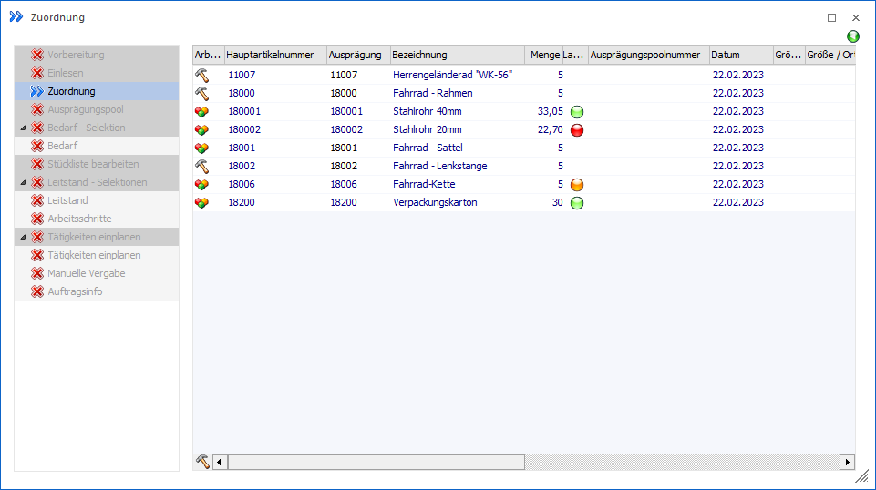
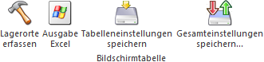

In der Tabelle "Ausprägungs- und Lagerortartikel" der Zuordnung werden alle Ausprägungs- und Lagerortartikel des aktuellen Produktionsauftrags dargestellt.
Hinweis
Die unterschiedlichen Vorgehensweisen zum Ausprägen und Lagerorte zuweisen werden in dem Kapitel Ausprägungen erfassen und Lagerorte zuweisen detailliert erläutert.

In der Tabelle "Ausprägungs- und Lagerortartikel" stehen folgende Spalten zur Verfügung:
Ø Arbeitsschritt
In dieser Spalte gibt ein Symbol an, ob es sich um einen Produktionsartikel (Halb- oder Fertigartikel) oder um eine Stücklistenkomponente handelt
Ø Hauptartikelnummer
An dieser Stelle wird die Hauptartikelnummer des Produktionsartikels oder der Komponente angezeigt.
Ø Ausprägung
Handelt es sich um einen Hauptartikel mit Ausprägungen, so kann an dieser Stelle die Artikelnummer des Ausprägungsartikels hinterlegt werden.
Ø Bezeichnung
An dieser Stelle wird die Artikelbezeichnung dargestellt.
Ø Menge
An dieser Stelle wird die für die Produktion benötigte Menge ausgewiesen.
Ø Lagerort
In der Spalte "Lagerort" wird über den Status der Lagerorterfassung Auskunft gegeben:
ü  - Rot
- Rot
Die Menge des Produktionsauftrags
wurde bisher nicht auf Lagerorte aufgeteilt.
ü  - Orange
- Orange
Ein Teil der Menge des
Produktionsauftrags wurde nicht auf Lagerorte aufgeteilt.
ü  - Grün
- Grün
Die Menge des Produktionsauftrags
wurde auf Lagerorte aufgeteilt.
ü  - Dunkelgrün
- Dunkelgrün
Es wurde auf einen Lagerort
mehr aufgeteilt, wie bei dem Produktionsauftrag hinterlegt wurde.
Hinweis
Per Doppelklick auf das Kugel-Symbol kann das Fenster "Lagerorte erfassen" geöffnet werden.
Ø Ausprägungspoolnummer
Wenn mit Ausprägungspools gearbeitet wird, dann ist an dieser Stelle eine Eingabe möglich (nähere Informationen siehe Kapitel Ausprägungspool).
Ø Datum
In dieser Spalte wird das Produktionsdatum des Produktionsauftrags ausgewiesen.
Ø Ausprägung 1 / Ausprägung 2 (hier Größe / Ort" und "Farbe")
In diesen Spalten wird die Ausprägung 1 und 2 (jeweils Kennzahl mit Bezeichnung) der gewählten Ausprägung angezeigt.
Ø Identnummer / Charge
Handelt es sich um einen Ident- oder Chargenartikel, so wird hier die entsprechende Nummer ausgewiesen.
Ø Prod. Auftragsnummer
An dieser Stelle wird die Produktionsauftragsnummer aufgeführt.
Ø Arbeitsschritt (wird produziert)
An dieser Stelle wird angezeigt, mit welchem Arbeitsschritt der Produktionsartikel gefertigt wird.
Ø Arbeitsschritt (für Produktion)
An dieser Stelle wird angezeigt, für welchen Arbeitsschritt diese Komponente benötigt wird.
Ø Produktionsartikel / Artikelbezeichnung
In diesen Spalten wird der Produktionsartikel stammt Bezeichnung ausgewiesen.
Ø Lagerort-Vorschlag
Wurde im Stücklistenstamm für den Produktionsartikel oder eine Komponente eine Lagerortvorgabe hinterlegt, so wird diese Information hier angezeigt.
Hinweis
Die Lagerortvorgabe des Stücklistenstamms wird bei Auftragsanlage fix in den Produktionsauftrag übertragen. Anschließend findet kein weiterer Abgleich zwischen Stücklistenstamm und Auftrag statt. Des Weiteren kann die Lagerortvorgabe innerhalb des Produktionsauftrags nicht verändert werden. Eine manuelle Übersteuerung der Vorgabe in der Lagerorterfassung ist jederzeit möglich!
Ø Typ
An dieser Stelle wird über ein Icon angezeigt, ob die Lagerortvorgabe (Stücklistenstamm) bzw. die Lagerortvorbelegung (benutzerspezifische Einstellung) korrekt angewendet wird.
ü - keine Lagerorterfassung / Vorgabe bzw.
Vorbelegung wird nicht angewendet
Es hat noch keine Lagerorterfassung
stattgefunden oder die Erfassung deckt sich nicht mit der Lagerortvorgabe bzw.
der Lagerortvorbelegung.
ü - Vorgabe bzw. Vorbelegung wird
angewendet
Die Lagerorterfassung der Zeile deckt sich mit jener aus der der
Lagerortvorgabe bzw. der Lagerortvorbelegung.
Ø Typ-Bezeichnung
In dieser Spalte wird ausgewiesen, ob es sich um einen Produktionsartikel (Halb- oder Fertigartikel) oder um eine Stücklistenkomponente handelt.
Tabellenbuttons

Ø Lagerorte erfassen
Durch Anwahl des Buttons "Lagerorte erfassen" wird das Fenster "Lagerorte erfassen" geöffnet.
Ø Ausgabe Excel
Durch Anwahl des Buttons "Ausgabe Excel" wird der Inhalt der Tabelle nach Microsoft Excel übergeben.
Ø Tabelleneinstellungen speichern
Die Spalten einer Tabelle können grundsätzlich an beliebige Positionen verschoben, bzw. in der Breite entsprechend angepasst werden. Durch Anwahl des Buttons "Tabelleneinstellungen speichern" werden die Einstellungen benutzerspezifisch gespeichert und bei dem nächsten Aufruf des Programmpunktes wieder vorgeschlagen.
Ø Gesamteinstellungen speichern
Im Gegensatz zu "Tabelleneinstellungen speichern" können mit "Gesamteinstellungen speichern" mehrere Tabellenaufbauten gespeichert und nach Wunsch geladen werden. Zusätzlich werden Sonderfunktionen der Tabelle (z.B. "Spalte gruppieren") ebenfalls bei der Speicherung bedacht.